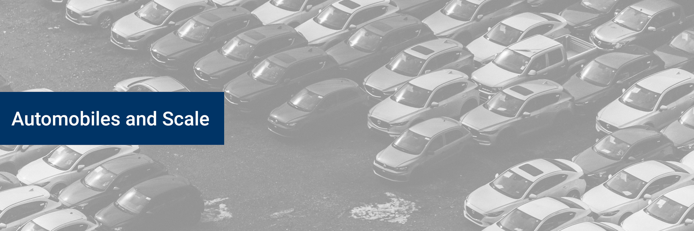
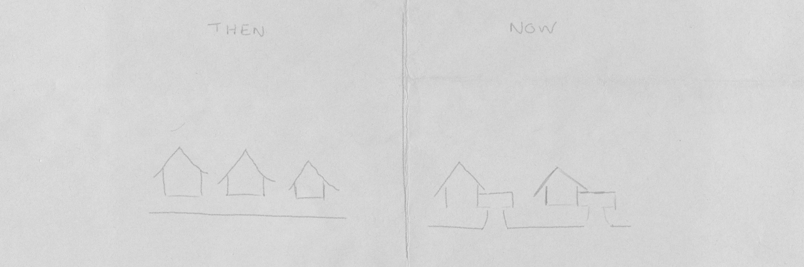
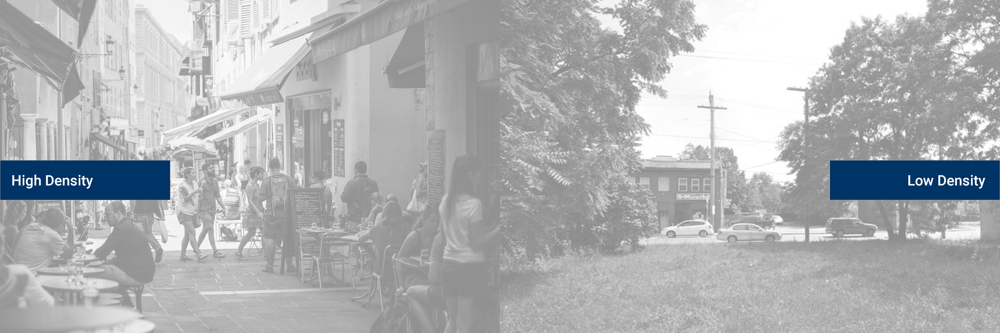
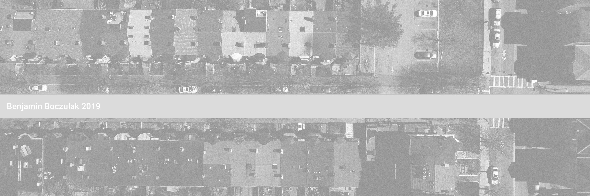

Blog
Automobiles and Scale
May 29, 2019
by Benjamin Boczulak

One of my favorite artists, Eric Sloane, is known for his depictions of pre-industrialized rural American landscapes. Sloane’s work often depicts quaint barns and farm houses nestled before picturesque backgrounds. There is something very nostalgic and natural about Sloane’s work, even though I have never lived in an environment like the one that is depicted. There is something ideal and intuitive about a simple human-scaled structure set in an undisturbed landscape. Just ask any child to draw a house and chances are it will look like something below.
The archetypal house serves as a reflection of primal desires and our very narrow view of scale. The introduction of automobiles into our landscape has forced the scales of our cities to become larger to accommodate the new roads, parking lots, and service stations. The scale of our architecture is no longer scaled towards the pedestrian, but the automobile. This shift has had significant cultural, physical, and psychological effects on our city’s inhabitants.
In 1977 Charles and Ray Eames produced a short film titled “Powers of Ten” which demonstrated that human’s intuitive sense of scale is irrelevant in the perspective of the whole universe. The film attempts to give viewers a perspective on the size of the universe, and it does a good job at this, especially for being created in 1977. Despite the good production and presentation of the video, it is still impossible for humans to begin to comprehend the scale of the universe. Thus, in our daily life we instinctually keep to our own scale.
Why have we built to be scaled towards humans?
Needs – Our structures need to be large enough to accommodate the size and motion of the human body. We create doorways to be the size of humans. We create doorknobs to fit the human hand.
Cost – We try to create the strongest structure at the lowest cost
Some structures that humans build is not structured for humans. Cathedrals are good examples as they feature large entrances, windows, and ornate decorations that are not created for humans, but rather gods. Cathedrals and their likes were placed in high places, city centers, and notable locations. To be seen and to be recognized and contrasted with the surrounding mundane landscape.
What impact have automobiles had on the scale of our buildings? The introduction and the integration of automobiles into the American landscape has fundamentally changed how cities and people organize. Buildings are now more spread apart to make space in-between for the passage and storage of automobiles. This has decreased the density of many of our places and has increased the scale of our architecture and made it less human friendly. Buildings and towns were once organized so that all destinations were in reasonable walking distance of each other. The drawing below is of Sherwood Anderson’s fictional town, Winesburg Ohio – which is modeled after a typical pre-industrialized American town. The map shows that all of the destinations someone may visit are in walking distance of one another. The train station, restaurants, and stores are all near houses. This type of organization and scale encourages walking from destination to destination and fosters community. In her book “The Life and Death of Great American Cities”, Jane Jacobs talks about the sidewalk and walking as an important aspect of culture that helps encourage diversity, community, and spontaneity. The sidewalk is a place for things to happen, random things. It is a place for a stroll, a walk with the dog, a place for children to play, a place for goods to be sold, and much more. Walking and living on the sidewalks of our towns adds randomness into our lives, which is sometimes missing in an organized and post-industrialized world.
In a world of automobiles, the adventures of the sidewalk are lost. The sidewalk is a place for transit and a place for things to happen. Transportation in an automobile on a road is a place in-between places, and one could argue is not a “place” at all. This in-between that is occupied by roads, highways, and parking lots increases the scale of our cities as it forces buildings to be further away from each other to accommodate for the size of automobiles. I created an illustration below so you can see what I am talking about. Space needs to be made around stores to accommodate cars, space needs to be added to homes to accommodate cars, space needs to be added to accommodate cars. This seems like a never-ending cycle that never makes its way back to human centered architecture.
We have designed our neighborhoods solely to accommodate the needs of cars. I’d imagine that a large portion of the American population couldn’t even walk to the grocery store on a sidewalk even if they wanted. Our schools, parks, hospitals, and more are being placed in foreign locations away from the natural center of neighborhoods because they require so much land for parking lots and driveways. This requires that citizens spend more time in cars commuting from one destination to another, creating more emissions, congestion, and opportunity cost.
We have seen the scale of our neighborhoods become larger, our homes, our shopping centers without any increase in density which means that buildings and destinations are becoming more spaced out and require more transportation. This is not doing our communities any favors. Jane Jacobs also mentioned that density is a natural force that makes places safer. Crime thrives in locations where no one is looking, so more eyes on the street and other properties can make a neighborhood more secure. Here is an example below, what neighborhood do you feel safer in?
It is important to think about how automobiles have changed the landscape of American cities. They have changed the scales of our streets, homes, and commercial areas. Space needs to be created to accommodates these automobiles, and this is space that is not a “place” and ultimately has a negative impact on our neighborhoods.
